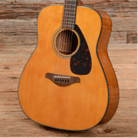
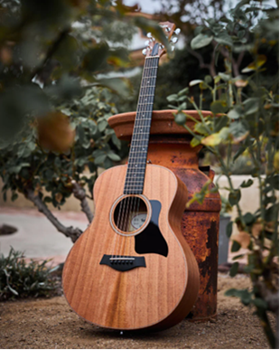
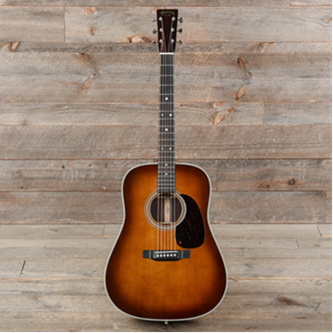

Acoustic Guitars
Acoustic guitars produce sound naturally through the vibration of their strings. When a string is plucked or strummed, the vibration travels through the guitar's body, which amplifies the sound without the need for electricity or external equipment.
They are commonly used in genres like folk, country, and singer-songwriter music because of their warm and natural tone. Acoustic guitars are often recommended for beginners since they are simple to use—no amplifier or cables are required.
The hollow wooden body is what gives acoustic guitars their sound. The shape and size of the body affect the tone, volume, and resonance of the instrument.
Yamaha FG800
The Yamaha FG800 is a well-known beginner acoustic guitar that offers excellent sound and reliability at an affordable price. It features a solid spruce top and a traditional dreadnought body shape, which produces a clear, balanced tone with strong projection.
Because of its durability, comfortable playability, and consistent quality, the Yamaha FG800 is often recommended for new guitar players who want a dependable instrument to learn on.

Taylor GS Mini
The Taylor GS Mini is a compact acoustic guitar designed to deliver a full, rich tone in a smaller and more portable size. Despite its reduced body size, it produces impressive volume and clarity thanks to Taylor’s high-quality construction.
This guitar is popular with traveling musicians, beginners, and experienced players who want a comfortable instrument that still sounds professional.

Martin D-28
The Martin D-28 is one of the most iconic acoustic guitars ever made and is known for its powerful, rich sound. It features a dreadnought body with a solid spruce top and rosewood back and sides.
Often used by professional musicians, the Martin D-28 has been played on countless recordings and live performances.
